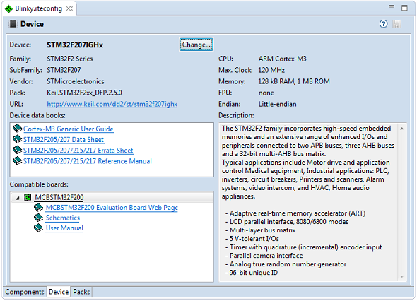

RTE Configuration - Device
The Device tab of the RTE configuration editor provides the following functionality:
- Shows information about the current selected device for the project.
- Access to the Software Pack URL and other documentation using hyperlinks.
- Using the Change… button allows you to select a different device for the project.

See also: